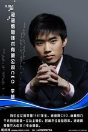

李想,现任泡泡网首席执行官，1981年生，1999年创业， 2000年创立泡泡网。
2006年5月23日，在2006创业中国高峰论坛上，25岁的李想，以泡泡网首席执行官的身份，晋身“中国十大创业新锐”，他是榜单上最年轻的一位，同时也是80后创业群体首次。
据PCPOP提供的资料显示：2005年营收近2千万，利润1千万。20倍的市盈率，市场价值2亿。创始人李想一股独大，身价在1亿以上。
李想给人的第一感觉就是实，(他看上去就是一个普普通通的大学理工科男生的样子，这样的人在一些理科大学里一抓一大把)可是他的实又让人感到一种发自内心的真诚，相信他说的话，也信任他做的事。他的事业也是由实开始，从最初四个人的“草台班子”到现在的泡泡网，所有做网络的人所能经历的坎坷他都经历了，他不讳言他的几次生死关头，也不讳言别人曾对他的不信任，他的踏实肯干使他有了今天的成就，也使他失去了一些诱人的机会。在采访中，我问他如何看待自己现在的成功，他说“我离成功还很远”我接着问他的成功定义是什么，他仔细想了想说，“我还没有一个成功的明确定义”接下来，我围着这个问题绕了半天他却始终未能给出一个能让我放下话筒的答案，但我并不失望，因为他的“实”告诉我，他不是在回避问题，而是这个问题他真的还没有一个标准答案。